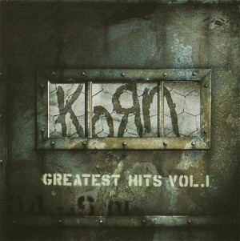

Track List
| 1 | Word Up! | 2:52 |
| 2 | Another Brick in the Wall (Parts 1,2,3) | 7:08 |
| 3 | Ya'll Want a Single? | 3:19 |
| 4 | Right Now | 3:12 |
| 5 | Did My time | 4:07 |
| 6 | Alone I Break | 4:17 |
| 7 | Here to Stay | 4:31 |
| 8 | Trash | 3:27 |
| 9 | Somebody Someone | 3:50 |
| 10 | Make Me Bad | 3:56 |
| 11 | Falling Away from Me | 4:31 |
| 12 | Got the Life | 3:47 |
| 13 | Freak on a Leash | 4:17 |
| 14 | Twist | 0:50 |
| 15 | A.D.I.D.A.S | 2:34 |
| 16 | Clown | 4:37 |
| 17 | Shoots and Ladders | 5:22 |
| 18 | Blind | 4:20 |
| 19 | Freak on a Leash (Dante Ross Mix) | 4:46 |